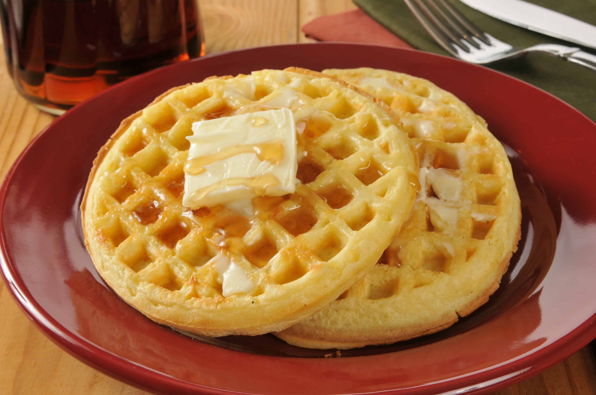

Recipe for Classic Waffles

Description
A waffle is a dish made from leavened batter or dough that is cooked between two plates that are patterned to
give a characteristic size, shape, and surface impression. There are many variations based on the type of waffle
iron and recipe used. Waffles are eaten throughout the world, particularly in Belgium, which has over a dozen
regional varieties. Waffles may be made fresh or simply heated after having been commercially cooked and
frozen.
Ingredients
- 1 1/2 tsp.baking powder
- 1/2 tsp.baking soda
- 1 tsp.salt
- 2 Tbsp.sugar
- eggs
- 2 tsp.vanilla extract
- 1/2 cupoil
- 2 cupsmilk
- 1 1/2 cupsall-purpose flour
- 1/2 cupcornstarch
Steps
- Mix all the wet ingredients in a bowl.
- Add the corn starch to the flour and mix it well. Add the salt, sugar, baking powder and baking soda to the
flours and mix well.
- Pour the wet ingredients to the dry and gently combine to mix. Do not over mix them as that will change the
texture of the Waffles. Just mix them enough to combine. Leave it aside for 5 to 10 minutes.
- In the meantime, heat the waffle maker. Add the required amount of batter to the hot waffle iron and close
the lid. Let the waffles cook until done. Follow the directions for your specific waffle maker to pour the
required amount of batter. They vary individually by the size of the waffle iron.
- In the meantime, heat the waffle maker. Add the required amount of batter to the hot waffle iron and close
the lid. Let the waffles cook until done. Follow the directions for your specific waffle maker to pour the
required amount of batter. They vary individually by the size of the waffle iron.